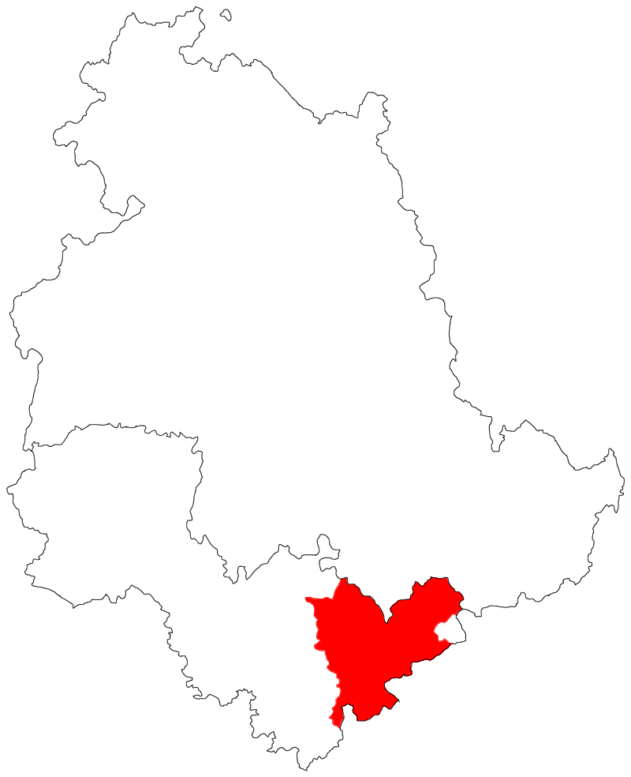

Grammatica ternana
Distribuzione storica del dialetto ternano
Il ternano è una lingua romanza di ramo italoromanzo centrale, parlata storicamente nel comune di Terni e in alcuni borghi contermini, più precisamente nei comuni di Arrone, Montefranco, Ferentillo e Stroncone.
1. Grafia e pronuncia2. Metafonesi
3. Genere neutro
4. Flessione nominale
5. Articoli
6. Preposizioni
7. Dimostrativi
8. Possessivi
9. Pronomi personali
10. Epitesi in -ne
11. Verbi ausiliari e principali irregolarità
12. Verbi regolari
1) Grafia e pronuncia
La seguente tabella riporta su ognuna delle colonne il grafema utilizzato, il fonema corrispondente, un esempio di parola con il suono e gli allofoni, ovvero le possibili variazioni del suono in base alla sua posizione nella parola o nella frase. Seguono tutte le precisazioni ed esplicazioni necessarie, con alcune note di fonologia storica. I suoni sono indicati con l’Alfabeto Fonetico Internazionale; per una loro definizione generica se ne può consultare il sito ufficiale.
| grafema | fonema | esempio | allofoni |
|---|---|---|---|
| ‹a› | /a/ | annu ['anːu] | ~ |
| ‹b› | /b/ | bellu ['bːelːu] | ~ |
| ‹c› (+ ‹e, i›) | /t͡ʃ/ | cerasa [t͡ʃe'rasa] | [ʃ, d͡ʒ] |
| ‹c› (altri casi) | /k/ | cane ['kane] | [g] |
| ‹q› | quistu ['kwistu] | ||
| ‹chj› | /c/ | occhju ['ocːu] | [ɟ] |
| ‹d› | /d/ | dittu ['ditːu] | ~ |
| ‹e› | /ɛ/ | erba ['ɛrba] | ~ |
| /e/ | emo ['emo] | ~ | |
| ‹f› | /f/ | fegne ['feɲːe] | [v] |
| ‹g› (+ ‹e, i›) | /d͡ʒ/ | giju ['d͡ʒːijːu] | ~ |
| ‹g› (altri casi) | /g/ | granne ['granːe] | ~ |
| ‹gn› | /ɲ/ | gnoccu ['ɲːokːu] | ~ |
| ‹i› | /i/ | issu ['isːu] | [j] |
| ‹j› | /j/ | jì [jːi] | ~ |
| ‹l› | /l/ | lengua ['leŋgwa] | ~ |
| ‹m› | /m/ | matre ['matre] | ~ |
| ‹n› | /n/ | notte ['nɔtːe] | [ɱ, ŋ] |
| ‹o› | /ɔ/ | otto ['ɔtːo] | ~ |
| /o/ | ora ['ora] | ~ | |
| ‹p› | /p/ | pica ['pika] | [b] |
| ‹r› | /r/ | robba ['rɔbːa] | ~ |
| ‹s› | /s/ | storzà [stor'd͡za] | [z, d͡z, t͡s] |
| ‹sc› (+ ‹e, i›) | /ʃ/ | sciacquà [ʃːak'kwa] | ~ |
| ‹t› | /t/ | tistu ['tistu] | [d] |
| ‹u› | /u/ | urzu ['urt͡su] | [w] |
| ‹v› | /v/ | vinu ['vinu] | ~ |
| ‹z› | /t͡s/ | zumpu ['t͡sːumbu] | [d͡z] |
| /d͡z/ | zeta ['d͡zːɛta] | ~ |
Il grafema ‹j› (i longa) rappresenta l’approssimante palatale /j/, come in jocu, sbaju, juttu ['jːoku, 'zbajːu, 'jːutːu]. Nella pronuncia è solitamente geminata quando è in posizione iniziale o tra vocali, cioè quasi sempre, tranne poche eccezioni come arjì “riandare”.
Il trigrafo ‹chj› rappresenta l’occlusiva palatale sorda /c/, come in chjamà, occhju [ca'ma, ocːu]. Permane prima di /i/: occhju fa al plurale occhji, al diminutivo ucchjittu.
L’accento tonico acuto ‹´› o grave ‹`› si adopera essenzialmente come in italiano: è obbligatorio sulle parole tronche che finiscono in vocale, ma anche su alcuni monosillabi con valore distintivo. In particolare ne suggeriamo l’uso, in una grafia ricercata, oltre che nei casi consimili all’italiano: sugli infiniti monosillabi dà, dì, fà, stà, jì per distinguerli da voci verbali simili, e sui pronomi obliqui mé, té per distinguerli dalle forme oggetto e termine me, te.
Dopo le consonanti nasali (‹m› /m/ e ‹n› /n/ [n, ɱ, ŋ]) qualsiasi consonante sorda si pronuncia sonora; essendo un fenomeno allofonico che si può verificare anche tra parole diverse, graficamente non è riprodotto, nemmeno internamente alle parole: sempre, cantà, infocà, biancu, incignà, in chjesa si pronunciano ['sɛmbre, kan'da, iɱvo'ka, 'bːjaŋgu, ind͡ʒi'ɲːa, iŋ 'ɟɛsa]. /s/ dopo /n/ oltre a sonorizzarsi si affrica: un santu [un 'd͡zandu].
Similmente, il nesso /nv/, anche tra due parole, viene spesso realizzato [mː]: San Valintinu [samːalin'dinu].
Il nesso /nj/ si realizza [ɲː]: non je lo dì! [no ɲːe lo di].
/b, d͡ʒ, j/ sono doppi dopo vocale o ad inizio di frase: bellu, giallu, jitu ['bːelːu, 'd͡ʒːalːu, 'jːitu].
/t͡ʃ/ (la “C dolce”) tra vocali si deaffrica in [ʃ] (come nell’inglese “she” e nel francese “chateau”, o anche nell’italiano “scia”, ma più breve): pace, coce ['paʃe, 'kɔːʃe]. Ciò però non quando è ad inizio di frase o dopo una parola raddoppiante: cena, la cena, a cena ['t͡ʃena, la 'ʃena, a 't͡ʃːena].
/s/ si pronuncia [z] prima di una consonante sonora, ma tra vocali si pronuncia sempre sordo [s], e quindi sposà, rosa si pronunciano [spo'sa, 'rɔsa], mai come gl’italiani “sposare, rosa” [spo'zare, 'rɔza].
In generale le occlusive sorde tra vocali in posizione debole (cioè non raddoppiate) vengono lenite e si sonorizzano, almeno in parte.
2) Metafonesi
La metafonesi è un fenomeno di armonia vocalica regressiva, ovvero in cui le vocali di una parola diventano più simili alla vocale finale (si armonizzano) per agevolare la pronuncia. In ternano la metafonesi è causata dalle vocali /u, i/ in fine di parola e consiste nell’innalzamento di un grado (innalzamento poiché fisicamente la lingua si innalza) delle vocali interne secondo questo schema:
è > é > i
ò > ó > u
Dipendendo dalle vocali finali, la metafonesi può creare non poche differenze tra le forme di una stessa parola, ad esempio:
- Tra maschile e femminile: béllu, bélli ma bèlla, bèlle; bónu, bóni ma bòna, bòne; quistu, quisti ma quésta, quéste, quésto; paciusu, paciusi ma paciósa, pacióse...;
- Tra singolare e plurale, ciò specialmente nei maschili che al singolare finiscono in -e: pède > pédi, mése > misi, còre > córi, colóre > culuri...;
- Tra varie persone di un verbo, ad esempio mette: io metto ma tu mitti; durmì (con infinito a metafonesi): dòrmo, dórmi, durmìi, io durmìssi ma issu dormésse.
3) Genere neutro
Una caratteristica delle lingue romaniche è l’appartenenza di ogni sostantivo a un genere che ne determina la flessione e l’accordo. Nella maggior parte delle dette lingue sono presenti il genere maschile e il femminile, ma in alcune (asturiano, romeno, napoletano...) è presente un terzo genere, indipendentemente dall’origine detto neutro (dal latino neuter “nessuno dei due”). In ternano il maschile contiene solo nomi contabili, e il neutro contiene solamente nomi non contabili, e che in italiano se hanno corrispettivi sono maschili: lu tavulu, lu fiore, lu buellu sono maschili perché sono contabili e determinati, mentre lo granu, lo piummu, lo mele, lo tempu, lo male sono neutri perché non sono contabili. Ciò vuol dire che lo stesso lemma può essere maschile e neutro con significati diversi: lu pesce indica un animale, mentre lo pesce indica il pesce come pietanza o genericamente (e. g. “il pescato”); lu ferru è un attrezzo di ferro, laddove lo ferru è il ferro come materiale.

Tuttavia oltre ai sostantivi propriamente neutri si accordano al neutro varie parti del discorso:
- gli infiniti sostantivati: lo bé, lo magnà, lo curre...;
- i participi sostantivati: lo passatu, lo futuru, lo cottu...;
- gli avverbi sostantivati: lo mejo, lo perché, lo doppo...;
- gli aggettivi sostantivati con valore generale: lo bellu, lo justu, quello pocu...;
- visto il punto precedente sono neutri i nomi dei colori (lo niru, lo verde...), i gusti (lo dorge, l’amaru) e le condizioni atmosferiche (lo friscu, lo callu, lo bruttu...).
Quando, inoltre, nelle costruzioni relative ci si riferisce a una proposizione, lo si fa al neutro: do’ è jitu Franciscu? non lo saccio!, mentre se l’oggetto fosse stato maschile: lu sai ’stu fattu? Lo stesso con i pronomi dimostrativi: questo è quello che vojo, testo non pò stà!
4) Flessione nominale
Le differenze regolari con l’italiano sono la desinenza maschile singolare -u (lu fiju “il figlio”) e il plurale dei femminili in -e: la luce al plurale diviene le luce, l’arte > l’arte etc. Un paio di femminili derivanti dalla IV declinazione (mano, fico “mano, fico”) esce in entrambi i numeri in -o: la mano > le mano, la fico > le fico.
| singolare | plurale | |
|---|---|---|
| maschile | fij - u | fij - i fiur - i |
| fior - e | ||
| femminile | fij - a | fij - e nott - e |
| nott - e | ||
| man - o | man - o | |
| neutro | vin - u | |
| mel - e |
Come presumibilmente nel ternano molto antico, nei dialetti circondariali il neutro ha di solito una desinenza molto estesa in -o per la flessione nominale, conservata anche in ternano in taluni sostantivi quali lo vino, lo tempo, ma nel ternano cittadino generalmente ha preso le uscite del maschile, e questa grammatica è stata scritta secondo questo ultimo uso.
Comunque, al plurale i neutri si comportano semplicemente come maschili: li vini, li meli.
Alcuni maschili in -cu oscillano al plurale tra -chi (l’amichi) e la forma italianeggiante -ci (l’amici).
Per formare il vocativo, si tronca il sostantivo sull’ultima vocale accentata: Maria, Catarina, Furiu, Elena, fratellu, dottore > Mari’, Catari’, Fu’, E’, frate’, dotto’.
Sostantivi eterocliti
Molti nomi che in latino erano neutri al plurale sono femminili e in -a indipendentemente dal genere: lu bracciu > le braccia, lu bacu > le baca, la mella > le mella.
5) Articoli
Articoli determinativi
| singolare | plurale | |||
|---|---|---|---|---|
| prima di consonante | prima di vocale | prima di consonante | prima di vocale | |
| maschile | lu | l’ | li | l’ |
| femminile | la | l’ | le | l’ |
| neutro | lo | l’ | ||
Articoli indeterminativi
| singolare | ||
|---|---|---|
| debole | forte | |
| maschile | un | unu (’nu) |
| femminile | una (’na) | |
L’articolo partitivo è assente, al suo posto si utilizzano costruzioni perifrastiche come un pocu, una ’nticchja de... o l’aggettivo certu (aco vistu certi omini “ho visto degli uomini”).
6) Preposizioni
Le preposizioni sono le stesse italiane: de, a, da, in, con, su, per, tra, fra; con, per spesso si abbreviano in co’, pe’.
Talora si fa utilizzo dell’accusativo preposizionale, cioè l’uso di a per marcare l’oggetto di un verbo, se è animato: aco vistu a Marcu, a té.
Preposizioni articolate
La preposizione lega con l’articolo solamente quando l’articolo è l’ prima di una parola con l'accento sulla prima sillaba* (de l’amicu ma dell’acqua), in tutti gli altri casi resta slegata.
| lu | li | la | le | lo | l’ | l’* | |
|---|---|---|---|---|---|---|---|
| de | de lu | de li | de la | de la | de lo | de l’ | dell’ |
| a | a lu | a li | a la | a le | a lo | a l’ | all’ |
| da | da lu | da li | da la | da le | da lo | da l’ | dall’ |
| in | ne lu | ne li | ne la | ne le | ne lo | ne l’ | nell’ |
| con | co’ lu | co’ li | co’ la | co’ le | co’ lo | co’ l’ | coll’ |
| su | su lu | su li | su la | su le | su lo | su l’ | sull’ |
| per | pe’ lu | pe’ li | pe’ la | pe’ le | pe’ lo | pe’ le | pell’ |
| tra | tra lu | tra li | tra la | tra le | tra lo | tra l’ | tra l’ |
| fra | fra lu | fra li | fra la | fra le | fra lo | fra l’ | fra l’ |
7) Dimostrativi
Il ternano possiede tre dimostrativi, consimili agl’italiani, quistu, tistu e quillu.
Quistu
Quistu indica qualcosa di vicino a chi parla, ed equivale all’italiano “questo”. Quando è un articolo si può abbreviare per aferesi della prima sillaba: ’stu locu, ’sto latte, ’st’antru. L’avverbio di modo corrispondente è accucì, “così, in questo modo”. Gli avverbi di luogo corrispondenti sono qui, qua (talora nel ternano più arcaico icquì, icquà) Il presentativo corrispondente è ecco “ecco qui”.
| singolare | plurale | |||
|---|---|---|---|---|
| prima di consonante | prima di vocale | prima di consonante | prima di vocale | |
| maschile | quistu | quist’ | quisti | quist’ |
| femminile | questa | quest’ | queste | quest’ |
| neutro | questo | quest’ | ||
Tistu
Tistu indica qualcosa di vicino a chi ascolta, e corrisponde all’italiano “codesto”. L’avverbio di modo corrispondente è attucì, “in codesto modo”. Il presentativo corrispondente è esto “ecco costì”.
| singolare | plurale | |||
|---|---|---|---|---|
| prima di consonante | prima di vocale | prima di consonante | prima di vocale | |
| maschile | tistu | tist’ | tisti | tist’ |
| femminile | testa | test’ | teste | test’ |
| neutro | testo | test’ | ||
Quillu
Quillu indica qualcosa di distante da chi parla e da chi ascolta, e corrisponde all’italiano “quello”. Quando è un articolo si può abbreviare per aferesi della prima sillaba: ’llu cane, ’llo curre, ’lla palla. L’avverbio di modo corrispondente è allucì, “in quel modo”. Il presentativo corrispondente è ello “ecco lì”. Gli avverbi di luogo corrispondenti sono lì, là (talora nel ternano più arcaico illì, illà). Si comporta in modo molto simile all’articolo determinativo:
| singolare | plurale | |||
|---|---|---|---|---|
| prima di consonante | prima di vocale | prima di consonante | prima di vocale | |
| maschile | quillu | quill’ | quilli | quill’ |
| femminile | quella | quell’ | quelle | quell’ |
| neutro | quello | quell’ | ||
8) Possessivi
L’aggettivo possessivo, nelle costruzioni regolari, si può usare esclusivamente in seguito al sostantivo, e mai prima. Per la terza persona plurale si utilizza lo stesso possessivo della terza persona singolare, siu: la casa sia può voler dire “la sua casa” e “la loro casa”.
| maschile/neutro | femminile | |||
|---|---|---|---|---|
| singolare | plurale | singolare | plurale | |
| 1a persona singolare | miu | mia | mia | mie |
| 2a persona singolare | tiu | tia | tia | tie |
| 3a persona singolare | siu | sia | sia | sie |
| 1a persona plurale | nóstru | nóstri | nòstra | nòstre |
| 2a persona plurale | vóstru | vóstri | vòstra | vòstre |
| 3a persona plurale | siu | sia | sia | sie |
Possessivi enclitici
I possessivi enclitici sono particelle atone che si aggiungono al nome a cui si riferiscono. Si utilizzano esclusivamente per i nomi di parentela: fratimu, mojima, patritu, sorite "mio fratello, mia moglie, tuo padre, le tue sorelle".
| maschile | femminile | |||
|---|---|---|---|---|
| singolare | plurale | singolare | plurale | |
| 1a persona singolare | -imu | -imi | -ima | -ime |
| 2a persona singolare | -itu | -iti | -ita | -ite |
9) Pronomi personali
Ji si usa per tutte le terze persone, indipendentemente anche dal genere: ji dico può significare “gli dico”, “le dico” o “dico loro”.
| soggetto | oggetto | obliquo | termine | riflessivo | |
|---|---|---|---|---|---|
| 1a persona singolare | io | me | mé | me | me |
| 2a persona singolare | tu | te | té | te | te |
| 3a persona singolare | issu (m.) essa (f.) | lu (m.) la (f.) lo (n.) | issu (m.) essa (f.) | ji | se |
| 1a persona plurale | nui | ci | nui | ci | ci |
| 2a persona plurale | vui | ve | vui | ve | ve |
| 3a persona plurale | issi (m.) esse (f.) | li (m.) le (f.) | issi (m.) esse (f.) | ji | se |
Nui e vui hanno anche le forme rafforzate nuantri, vuantri (noialtri, voialtri), al femminile nuantre, vuantre.
10) Epitesi in -ne
La particella -ne si può aggiungere a qualsiasi parola tronca con valore puramente ritmico: no > none, tu > tune, magnà > magnane etc.
11) Verbi ausiliari e principali irregolarità
I tempi composti si formano come in italiano coordinando avé o esse e il participio passato. In questo paragrafo e nel successivo, a scopo didattico, si segnaleranno tutti gli accenti delle parole, che chiaramente nella scrittura normale sarebbero superflui.
Esse
| indicativo | ||||
|---|---|---|---|---|
| presente | imperfetto | perfetto | futuro | |
| io | sò | èro | fùi | saràco |
| tu | si | éri | fùsti | sarài |
| issu/essa | è | èra | fu | sarà |
| nui | sémo | èrimo | fùssimo | sarémo |
| vui | séte | èrivo | fùssivo | saréte |
| issi/esse | sò | èrono | fùrno | sarònno |
| congiuntivo | condizionale | imperativo | ||
| presente | imperfetto | presente | presente | |
| io | sìa | fùssi | sarìa sarébbe | - |
| tu | sìa | fùssi | sarìsti | éssi |
| issu/essa | sìa | fùsse | sarìa sarébbe | - |
| nui | siàmo | fùssimo | saréssimo | - |
| vui | siàte | fùssivo | saréssivo | séte |
| issi/esse | sìano | fùssero | sarìono sarébbero | - |
| infinito | gerundio | participio | ||
| presente | presente | presente | passato | |
| èsse | essènno | essènte | stàtu | |
Avé
Il verbo avé ha due utilizzi:
- Quando esprime possesso fisico od affettivo viene affiancato dalla particella ci: c’aco ’na casa, avecci un cane, avecci un fratellu, me pare che tu c’achi lu core più duru de li sassi!
- Quando è utilizzato con valore ausiliare, perifrastico o figurato (con parole quali voja, raggione, tortu...) si utilizza normalmente: avé voja, avé vint’anni, avé lo tempu, avé da jì, avé la disgrazzia.
In unione con da forma una perifrastica dello stesso valore di dové: aco da jì a Narni = devo jì a Narni.
In modo impersonale può a volte assumere il significato di “esserci”; un uso molto diffuso è quello esplicare il passaggio del tempo: ha du’ misi che è mortu, “son passati due mesi da quando è morto”, spesso nella frase cristallizzata avé tantu: ea tantu “era passato molto tempo” da tant’ha “da molto tempo”.
| indicativo | ||||
|---|---|---|---|---|
| presente | imperfetto | perfetto | futuro | |
| io | àco | éo | ìbbi | avràco |
| tu | hài | ìi | ìsti | avrài |
| issu/essa | ha | éa | ébbe | avrà |
| nui | émo | eàmo | éssimo | avrémo |
| vui | éte | eàte | éssivo | avréte |
| issi/esse | ònno (ò’) | éono | ébbero | avrònno |
| congiuntivo | condizionale | imperativo | ||
| presente | imperfetto | presente | presente | |
| io | àca | ìssi | avrìa avrébbe | - |
| tu | àca | ìssi | avrìsti | àghi |
| issu/essa | àca | ésse | avrìa avrébbe | - |
| nui | achiàmo | éssimo | avréssimo | - |
| vui | achiàte | éssivo | avréssivo | éte |
| issi/esse | àcano | éssero | avrìono avrébbero | - |
| infinito | gerundio | participio | ||
| presente | presente | presente | passato | |
| avé | avènno | avènte | avùtu | |
Jì, annà
I verbi jì e annà significano “andare” e come il loro corrispettivo italiano hanno una radice irregolare per alcune persone del presente indicativo e congiuntivo.
| indicativo | ||||
|---|---|---|---|---|
| presente | imperfetto | perfetto | futuro | |
| io | vàco | jéo | jìtti | jeràco |
| tu | vài | jìi | jìsti | jerài |
| issu/essa | va | jéa | jétte | jerà |
| nui | jémo | jeàmo | jéssimo | jerémo |
| vui | jéte | jeàte | jéssivo | jeréte |
| issi/esse | vònno | jéono | jéttero | jerònno |
| congiuntivo | condizionale | imperativo | ||
| presente | imperfetto | presente | presente | |
| io | vàca | jìssi | jirìa jerébbe | - |
| tu | vàca | jìssi | jirìsti | va’ |
| issu/essa | vàca | jésse | jirìa jerébbe | - |
| nui | jàmo | jéssimo | jeréssimo | - |
| vui | jàte | jéssivo | jeréssivo | jéte |
| issi/esse | vàcano | jéssero | jirìono jerébbero | - |
| infinito | gerundio | participio | ||
| presente | presente | presente | passato | |
| jì | jènno | jènte | jìtu, jùtu | |
| indicativo | ||||
|---|---|---|---|---|
| presente | imperfetto | perfetto | futuro | |
| io | vàco | annào | annìtti annài | annaràco |
| tu | vài | annài | annàsti | annarài |
| issu/essa | va | annàa | annétte annò | annarà |
| nui | annàmo | anneàmo | annàssimo | annarémo |
| vui | annàte | anneàte | annàssivo | annaréte |
| issi/esse | vònno | annàono | annéttero annòrno | annarònno |
| congiuntivo | condizionale | imperativo | ||
| presente | imperfetto | presente | presente | |
| io | vàca | annàssi | annarìa annarébbe | - |
| tu | vàca | annàssi | annarìsti | va’ |
| issu/essa | vàca | annàsse | annarìa annarébbe | - |
| nui | anniàmo | annàssimo | annaréssimo | - |
| vui | anniàte | annàssivo | annaréssivo | annàte |
| issi/esse | vàcano | annàssero | annarìono annarébbero | - |
| infinito | gerundio | participio | ||
| presente | presente | presente | passato | |
| annà | annànno | annànte | annàtu | |
Principali irregolarità, e verbi che le presentano
I verbi con radice in ò, ó, è, é hanno la radice cangiante per le persone verbali che terminano in -i. Per esempio durmì: durmì (radice dòrm-) : dòrmo, dórmi, allo stesso modo dorméo, durmìi. Anche i participi seguono questa regola, ad esempio missu ma méssa, juntu ma jónta, cóttu ma còtta.
I verbi dà, stà, jì, vedé hanno la prima persona del presente indicativo e le voci del presente congiuntivo sul modello di avé: dàco, stàco, vàco, véco, dàca, stàca, vàca, véca etc.
I verbi dà, stà, jì, fà, sapé hanno la terza persona plurale dell’indicativo presente in -ònno: dònno, stònno, vònno, fònno, sònno. Spesso queste forme sono abbreviate in -o’: issi dò’, stò’, vò’, fò’, sò’.
I verbi dà e stà all’indicativo presente, imperfetto e perfetto e al congiuntivo imperfetto si coniugano come verbi di seconda coniugazione: démo, déo, dìsti, déssimo, dìssi, désse, stéte, stìi, stìsti, stéssivo, stìssi, stésse etc.
I verbi dì e fà hanno la radice completa nella prima e seconda persona plurali del presente indicativo e imperativo: dicémo, dicéte, facémo, facéte.
Volé: vòjo, vóli, vòle, vòjono, (io, tu, issu) vòja, vojàmo, vojàte, vòjano.
Poté: pòzzo, pói (póli), pò (pòle), pòzzono, (io, tu, issu) pòzza, pozzàmo, pozzàte, pòzzano.
Sapé: sàccio, (io, tu, issu) sàccia, sacciàmo, sacciàte, sàcciano, sàcci.
Vinì: vèngo, véni, vène, venémo, venéte, vèngono.
Tené: tèngo, téni, tène, tenémo, tenéte, tèngono.
Alcuni perfetti diversi dall’italiano: volé > vòrze, vinì > vìnne, vedé > vìdde, métte > mésse, spànne > spàse, créde > crése.
Alcuni participi passati diversi dall’italiano: créde > crìsu/crésa, spànne > spàsu, dì > dìttu/dìtta.
12) Verbi regolari
A livello grammaticale i tempi sono identici all’italiano, ma morfologicamente se ne discostano molto. La I coniugazione corrisponde alla prima italiana. In ternano però l’armonia vocalica ha portato alla fusione di quelle che in italiano sono la seconda coniugazione e la terza in una sola coniugazione, che chiameremo II, in cui le uscite originali dei verbi sono distinte solo all’infinito e al participio passato. Segue la declinazione di due verbi regolari, amà e partì. Le desinenze hanno l’accento grafico solo quando portano rizoatonia al verbo (ovvero spostano l’accento dalla radice).
Indicativo presente
| I | II | |
|---|---|---|
| io | am - o | part - o |
| tu | am - i | part - i |
| issu/essa | am - a | part - e |
| nui | am - àmo | part - émo |
| vui | am - àte | part - éte |
| issi/esse | am - ono | part - ono |
Indicativo imperfetto
| I | II | |
|---|---|---|
| io | am - ào | part - éo |
| tu | am - ài | part - ìi |
| issu/essa | am - àa | part - éa |
| nui | am - eàmo | part - eàmo |
| vui | am - eàte | part - eàte |
| issi/esse | am - àono | part - éono |
Indicativo perfetto
| I | II | |
|---|---|---|
| io | am - ài | part - ìtti |
| tu | am - àsti | part - ìsti |
| issu/essa | am - ò | part - étte |
| nui | am - àssimo | part - éssimo |
| vui | am - àssivo | part - éssivo |
| issi/esse | am - òrno | part - éttero |
Indicativo futuro
La terza persona plurale si può abbreviare in -aro’, -ero’: amaro’, partero’.
| I | II | |
|---|---|---|
| io | am - aràco | part - eràco |
| tu | am - arài | part - erài |
| issu/essa | am - arà | part - erà |
| nui | am - arémo | part - erémo |
| vui | am - aréte | part - eréte |
| issi/esse | am - arònno | part - erònno |
Congiuntivo presente
| I | II | |
|---|---|---|
| io | am - i | part - a |
| tu | am - i | part - a |
| issu/essa | am - i | part - a |
| nui | am - iàmo | part - iàmo |
| vui | am - iàte | part - iàte |
| issi/esse | am - ino | part - ano |
Alcuni verbi di II e di III oscillano tra la forma in -a e quella in -i: faccia = facci, daca = dachi, voja = voji.
Congiuntivo imperfetto
Con l’avverbio non può formare un imperativo negativo: non ridissi!, equivalente a non ride!.
| I | II | |
|---|---|---|
| io | am - àssi | part - ìssi |
| tu | am - àssi | part - ìssi |
| issu/essa | am - àsse | part - ésse |
| nui | am - àssimo | part - éssimo |
| vui | am - àssivo | part - éssivo |
| issi/esse | am - àssero | part - éssero |
Condizionale presente
Per il condizionale sono valide e la forma in -ia, generalmente più rurale, e quella toscaneggiante, ma comunque ternana, in -ebbe.
| I | II | |
|---|---|---|
| io | am - arìa am - arébbe | part - irìa part - erébbe |
| tu | am - arìsti | part - irìsti |
| issu/essa | am - arìa am - arébbe | part - irìa part - erébbe |
| nui | am - aréssimo | part - eréssimo |
| vui | am - aréssivo | part - eréssivo |
| issi/esse | am - arìono am - arébbero | part - irìono part - erébbero |
Imperativo presente
| I | II | |
|---|---|---|
| am - a | part - i | tu! |
| am - àte | part - éte | vui! |
Infinito presente
| I | II | ||
|---|---|---|---|
| am - à | venn - e | sap - é | part - ì |
Gerundio presente
Il gerundio ha lo stesso valore che ha in italiano, ma ha un uso ridotto poiché alla costruzione continuativa italiana stare + (gerundio) corrisponde stà a + (infinito); ad esempio “sto mangiando” si traduce staco a magnà, “stavo aspettando” steo a aspettà, “starò mangiando” staraco a magnà.
| I | II |
|---|---|
| am - ànno | part - ènno |
Participio presente
| I | II | |||
|---|---|---|---|---|
| singolare | plurale | singolare | plurale | |
| maschile | am - ànte | am - ànti | part - ènte | part - énti |
| femminile | am - ànte | am - ànte | part - ènte | part - ènte |
| neutro | am - ànte | part - ènte | ||
Participio passato
Generalmente la differenza nel participio passato tra i verbi in -é, -e e quelli in -ì è mantenuta, ma vi è una tendenza a estendere la prima forma: vistitu, jitu, firnitu ma anche vistutu, jutu, firnutu.
| I | II | |||||
|---|---|---|---|---|---|---|
| amà | sapé | partì | ||||
| singolare | plurale | singolare | plurale | singolare | plurale | |
| maschile | am - àtu | am - àti | sap - ùtu | sap - ùti | part - ìtu | part - ìti |
| femminile | am - àta | am - àte | sap - ùta | sap - ùte | part - ìta | part - ìte |
| neutro | am - àtu | sap - ùtu | part - ìtu | |||